WEC Devices
Wave Energy Converter (WEC) is type of device that can take the advantage of wave energy and transform it into electrical power. WEC can be classified according to their operating location and operating modes.
We have identified eight main types of WEC:
A) ATTENUATOR
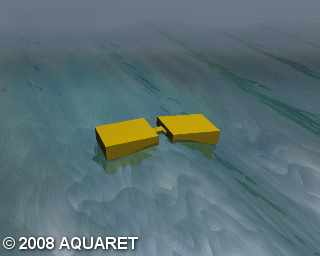An attenuator is a floating device which operates parallel to the wave direction and effectively rides the waves. These devices capture energy from the relative motion of the two arms as the wave passes them.
B) POINT ABSORBER
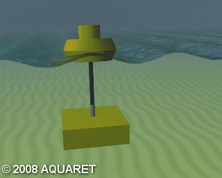A point absorber is a floating structure which absorbs energy from all directions through its movements at/near the water surface. It converts the motion of the buoyant top relative to the base into electrical power. The power take-off system may take a number of forms, depending on the configuration of displacers/reactors.
C) OSCILLATING WAVE SURGE CONVERTER
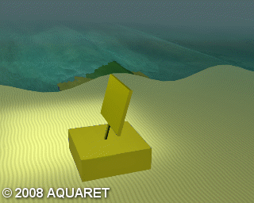
Oscillating wave surge converters extract energy from wave surges and the movement of water particles within them. It consists of two components: a sea bed fixed air-filled cylindrical chamber and a moveable upper cylinder. While under the crest, the water pressure above the device increases and moves the upper cylinder down. While under a trough, the water pressure on the device reduces and raises upper cylinder. An advantage of this operating mode is that the submerged arrangement can avoid the slamming forces, which is usually experienced by floating devices.However, drawback of this mode is the difficulty of maintenance. These devices are located nearshore.
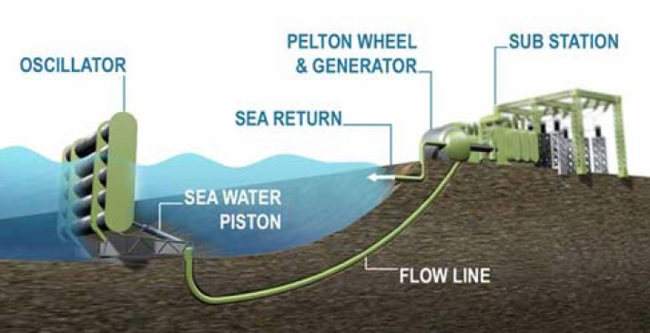
D) OSCILLATING WATER COLUMN
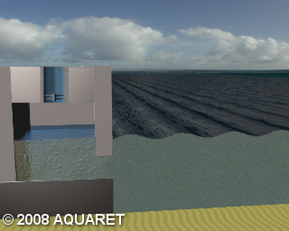The OWC concept has been proposed as a nearshore device by Oceanlinx. An typical OWC consists of a chamber with an open gate to the sea below the water surface. While waves approach the device, forcing the water into the chamber and applying pressure on the air within the chamber to escape to atmosphere through the turbine. While the water retreats, air is then drawn back through the turbine. The advantage of the OWC is its simplicity and robustness. An example of a shoreline mounted device is the Wavegen Limpet installed on the island of Islay, Western Scotland, producing electricity for the national grid.
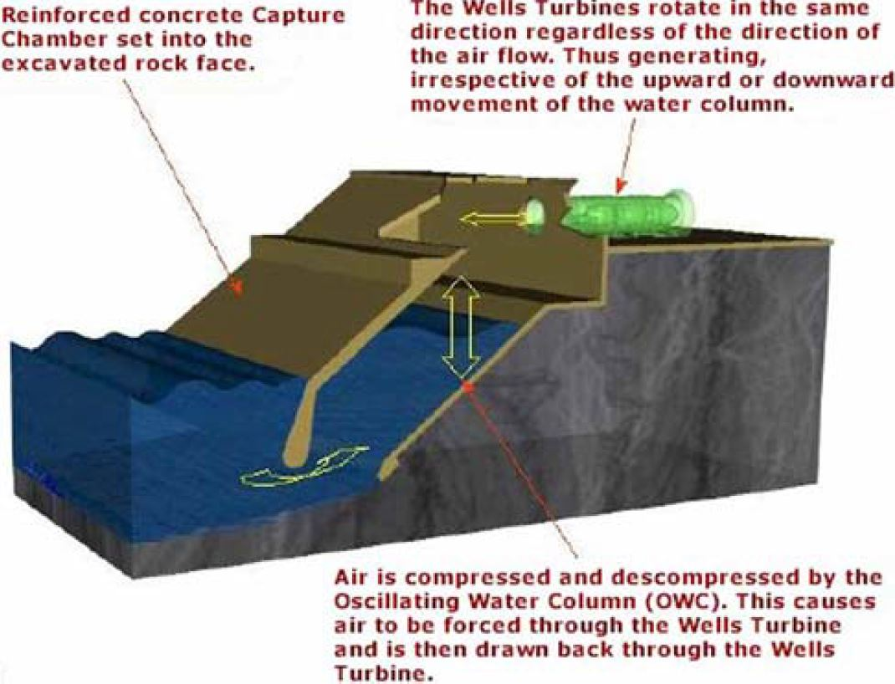
E) OVERTOPPING/TERMINATOR DEVICE
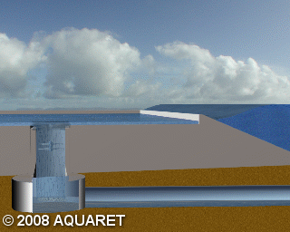An overtopping device gathers incident waves in a reservoir above the sea level and releases the water back with turbines. This kind of device uses a pair of large curved reflectors to capture waves into the center part, with the water flowing up a ramp and over the top into a raised reservoir. The water is allowed to return to the sea through a number of low-head turbines.
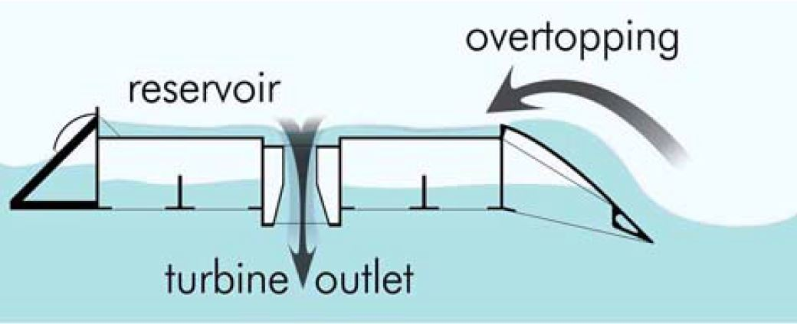
F) SUBMERGED PRESSURE DIFFERENTIAL
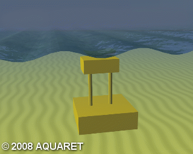Submerged pressure differential devices are typically located near shore and attached to the seabed. The motion of the waves causes the sea level to rise and fall above the device, inducing a pressure differential in the device. The alternating pressure pumps fluid through a system to generate electricity.
G) BULGE WAVE
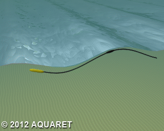Bulge wave technology consists of a rubber tube filled with water, moored to the seabed heading into the waves. The water enters through the stern and the passing wave causes pressure variations along the length of the tube, creating a 'bulge'. As the bulge travels through the tube it grows, gathering energy which can be used to drive a standard low-head turbine located at the bow, where the water then returns to the sea.
H) ROTATING MASS
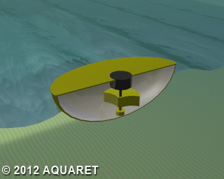Two forms of rotation are used to capture energy by the movement of the device heaving and swaying in the waves. This motion drives either an eccentric weight or a gyroscope causes precession. In both cases the movement is attached to an electric generator inside the device.
I) OTHER
This covers those devices with a unique and very different design to the more well-established types of technology or if information on the device's characteristics could not be determined. For example the Wave Rotor, is a form of turbine turned directly by the waves. Flexible structures have also been suggested, whereby a structure that changes shape/volume is part of the power take-off system.
Challenges of WEC Devices
There are still a number of technical challenges to increase the performance and commercial competitiveness of wave energy converters.
The energy of wave varies with different amplitudes and frequencies. Converting these various power levels into smooth electrical output is challenging and prediction of average power of wave energy with more accuracy is necessary.
Though WEC devices can be designed to operate efficiently in most commonly occurring waves, they have to withstand extreme sea conditions that are very rarely. This will propose some challenging structural problems and significantly enhance the cost of device construction.
It is also challenging to undermine the highly corrosive sea environments to the WEC devices.
More detailed evaluation of the complete system is necessary if optimized, robust yet efficient systems are to be developed.